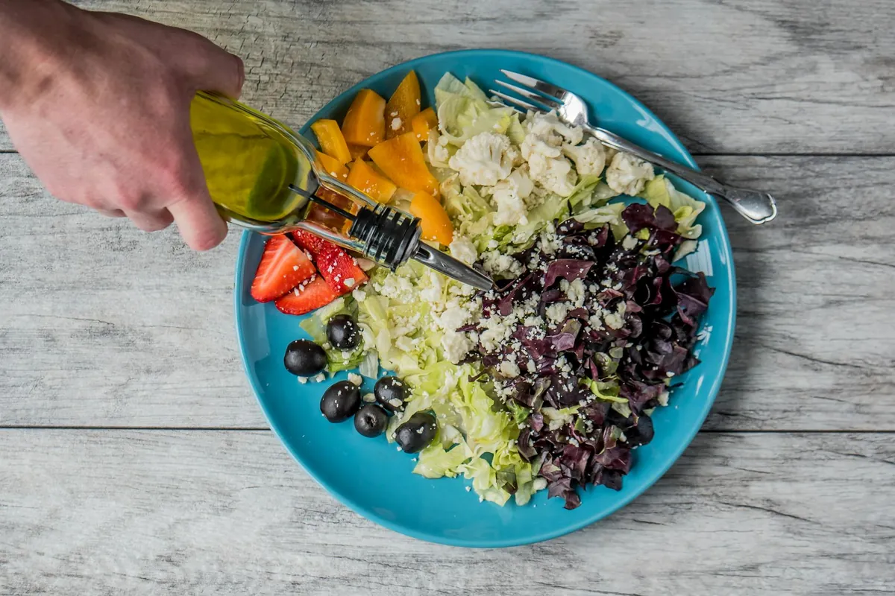

gut
gutFermented Foods: Your Practical Gut Reset
Discover how to easily incorporate traditional fermented foods into your US diet for a healthier gut and overall well-be
Read article →Practical guides on sleep, gut health, stress, and daily movement — written for real schedules, not lab conditions.
gutDiscover how to easily incorporate traditional fermented foods into your US diet for a healthier gut and overall well-be
Read article →Struggling with sleep? Discover how to harness the power of light exposure and timing to reset your circadian rhythm and
Read article → home-workouts
home-workoutsDiscover effective no-equipment strength training routines you can do at home, even in the smallest spaces. Get stronger
Read article →Discover how low-impact walking routines can be your secret weapon for weight management. Learn simple, effective strate
Read article →
Discover anti-inflammatory foods packed with antioxidants and healthy fats to help your body heal. Learn practical tips and easy recipes.
2026-03-31 · Read →
Discover practical tips and budget-friendly meal prep strategies for US families to eat healthy without breaking the bank. Learn how to save
2026-03-30 · Read →
Discover delicious and satiating high-protein breakfast ideas designed for active lifestyles. Learn how to fuel your day and stay energized.
2026-03-30 · Read →
Learn practical strategies to keep your strength and independence as you age. This guide offers expert advice and personal insights for a vi
2026-03-30 · Read →